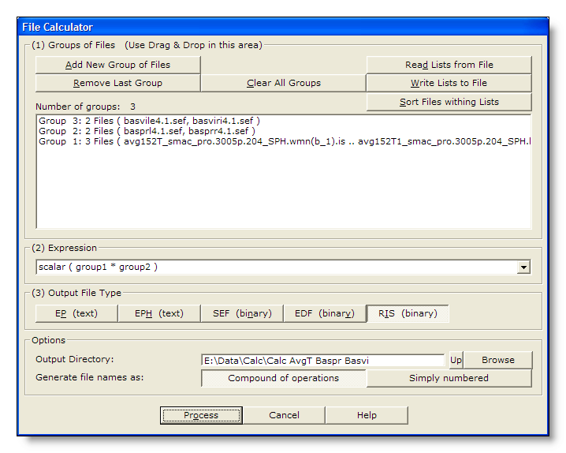

This is a tool to batch-process sets of files with a mathematical expression of your liking. There can be many sets of files to use, but each set should be somehow a coherent one, f.ex. all the files of all subjects for one condition. Expressions are composed with elementary operations, see below.
Call the dialog from Tools | File Calculator menu.
The following dialog pops out. Fill the parameters which are relevant for you, drop the sets of files to process, then click either on the Process button:

|
Groups of Files |
You can Drag & Drop files here. |
|
Add New Group of Files |
Enter a new group of files. See this note about groups. |
|
Remove Last Group |
Does what it says (amazing). |
|
Clear All Groups |
Clear out all the groups at once. |
|
Read Lists from File |
You can direclty retrieve the lists of groups previously saved. |
|
You can save the lists of current groups into a file, in case you want to re-use them (much recommended!). |
|
|
Sort Files within Lists |
A strange behavior of Windows is to not respect the order of the files dropped in a window. To help cure this silly habit, you can sort all the file names of all the groups already entered. Note however that Drag & Dropped files are automatically sorted. This is an important issue, as we're going to process files in parallel between groups! |
|
Number of Groups: |
Just a counter of the number of groups entered. |
|
Summary list of all groups |
One group is displayed per line. |
|
Expression |
Enter the expression to be evaluated. Be sure you have entered all the groups needed by your expression! |
|
|
|
|
EP (text) |
|
|
EPH (text) |
|
|
SEF (binary) |
Binary file, see the .sef file specification. Compact format which can handle all the basic informations for EEG. |
|
EDF (binary) |
Binary file, see the .edf file specification. Useful only for data interchange, otherwise don't use (loss of precision)! |
|
RIS (binary) |
Binary file, see the .ris file specification. Produced by the matrix multiplication / Inverse Solution computation. |
|
Options |
|
|
Output Directory |
What it says: where to put the results! |
|
|
|
|
Compound of Operations |
Each file name will hold a condensed version of the operations applied from the originals. See this note. Use this if you want to remember precisely what are your files, f.ex. for Inverse Solutions. Be aware that too many operations will generate very long and unreadible file names, and can even crash Cartool. |
|
Simply Numbered |
Just generate file names as a numbered list. See this note. |
|
Process |
Run the batch processing. The button remains disabled until all parameters are OK. |
|
Cancel |
Quit the dialog. |
|
Help |
Launch the Help to the right page (should be here...). |
You have to provide a mathematical expression to be applied on your files.
First understand what is meant by groups of files, then see what operations can be applied to them.
Operands are usually whole sets of files, and each set should have some coherence of its own :
Having some sort of semantic associated to it, f.ex. all the subjects for 1 condition, or all the epochs of 1 subject etc...
Having the same number of electrodes / solution points & same number of time frames among files.
Preferably files being of the same types, i.e. not mixing scalar and vector values.
Preferaby files having the same extensions, but not mandatory.
Among groups, however, sizes and types can differ. However a given operation should receive compatible groups, f.ex.:
Summing, subtracting etc... between 2 groups: both groups should have the same number of electrodes, time frames, and number of files.
Multiplying matrices with EEG: the usual Line / Column dimensions criterion should be satisfied.
Groups are used by sequentially and synchronically processing each of their files , f.ex. summing all the files of two groups:
|
Group1 |
Group2 |
"+" operation |
|
cond1.subj1 |
cond2.subj1 |
cond1.subj1 + cond2.subj1 |
|
cond1.subj2 |
cond2.subj2 |
cond1.subj2 + cond2.subj2 |
|
cond1.subj3 |
cond2.subj3 |
cond1.subj3 + cond2.subj3 |
|
... |
... |
... |
|
cond1.subjn |
cond2.subjn |
cond1.subjn + cond2.subjn |
Matrix multiplication, though, is a special case. One matrix is taken, then all the EEG are multiplied to it, then the next matrix, and so on:
|
Group1 |
Group2 |
"*" operation |
|
matrix1 |
subj1 |
matrix1 * subj1 |
|
matrix2 |
subj1 |
matrix2 * subj1 |
|
... |
... |
... |
|
matrixm |
subj1 |
matrixm * subj1 |
Group, Group1, Group2... are groups of files.
Value is a scalar value.
Vector3D is a 3D vector (x, y, z).
|
Operation & operands |
Description |
Type of results |
|
Group + Value |
Add a constant value to a group of files. |
Group, |
|
Group + Vector3D |
Add a constant vector to a group of files. |
Group, |
|
Group1 + Group2 |
Sum all files of Group1 with the files of Group2. |
Group, |
|
Group - Value |
Subtract a constant value to a group of files. |
Group, |
|
Group - Vector3D |
Subtract a constant vector to a group of files. |
Group, |
|
Group1 - Group2 |
Subtract all files of Group1 with the files of Group2. |
Group, |
|
Group * Value |
Multiply the group of files by a constant value. |
Group, |
|
Group1 * Group2 |
Multiply all files from Group1 by the files of Group2. |
Group, |
|
Group / Value |
Divide the group of files by a constant value. |
Group, |
|
Function & operands |
Description |
Type of results |
|
Abs ( Group ) |
Input files are scalar values: absolute values. |
Group, |
|
Scalar ( Group ) |
Input files are scalar values: values untouched. |
Group, |
|
Sqr ( Group ) |
Input files are scalar values: the square of the values. |
Group, |
|
Sqrt ( Group ) |
Input files are scalar values: the square root of the values. |
Group, |
|
Group1 |
Handy to just rename a bunch of files, and / or convert format. Check Simply Numbered from the Generate file names option. |
|
Group1 * Group2 |
Compute the results of Inverse Solutions, if Group1 holds the
matrices and Group2 the EEG. See the next paragraph for more on IS. |
|
Group1 - Group2 |
Compute the differences between two sets of files. |
|
( 3 * Group1 + 2 * Group2 ) / 5 |
Do a weighted sum of two groups. |
!New!
It is now strongly recommended to use the new dedicated tool to compute the results of inverse solutions .
This tool offers much more controls over this process, like preprocessing filter, postprocessing standardization, per group average etc... It also performs numerous consistency checks on all the input files, so the results are also safer.
Use that tool - now.
The old way - if you really insist:
You can use the File Calculator to produce the final stage of the Inverse Solution, what we call Results of Inverse Solution, or RIS (see .ris files). Provided one or more matrix(ces) of Inverse Solution , you can batch this computation according to your needs.
To see how you can compute the inverse matrices, go here, and to see how you can use these matrices for display, go here.
Say we dropped the matrices into Group1, and some ERPs for two conditions into Group2 and Group3 respectively. Here are the most common options to compute the results of inverse solutions (which one is "the right one" depends on your experiment, paradigm and tests):
Processed files are written in the base directory. File names can be either a compound of the applied operations, or a simple numbered list of files based on the base directory name. Extension is the one specified in the paramaters.
The type of results will depend on what you asked for, f.ex. it is usually scalar values ("numbers"), but it can be vectors, as from the Inverse Solution computation.
The dimensions of the results also depends on the operations applied, so they can have different sizes as compared to the input files.
Verbose file .vrb (text), showing all the parameters.
By default, Cartool will generate file names that reflect the whole set of operations. These are not exact replicas of the expression, but rather a construction derived of it. This is meant to help remember what operations have been done on the files.
To do so, it will use the original file names, insert the operators / functions used one at a time, then optinally shrink the resulting file names if they appear to be too long. F.ex.:
Expression Group1 - Group2 can generate basprr4-basviri4.eph
Expression Scalar ( Group1 * ( Group2 - Group3 ) ) can generate Scalar(Avg152tSmacProSph.lorb1.basprr4-basviri4).ris
One problem arises with operator like * / and the like, which Windows does not want at all in file names. In these cases, a "." (dot) is used instead of the operator.
If not a compound of operations, file names will simply repeat the last directory part of the Base Directory, then add an index value, f.ex.:
Calc G1-G2.0001.eph
Calc G1-G2.0002.eph
Calc G1-G2.0003.eph
etc...
All these operations will use the disk to store the temporary and the final results. There is no way to do otherwise, as you know, this is a batch tool! Plus you can process gigabytes of data.
Consequently, think of having some significant room left on your hard drive ! The more elaborated your expression, the more space you need, but as a rule of thumb, say you need 3 times the amount of data you process in free space (if data are already in binary format, otherwise, maybe 2 times should be fine).
Some errors in your expression can be detected when you start the processing, like missing parenthesis, missing operands and the like.
But some other errors will be only be found when reaching the problematic part, like wrong types of operands (adding vectors to scalars).